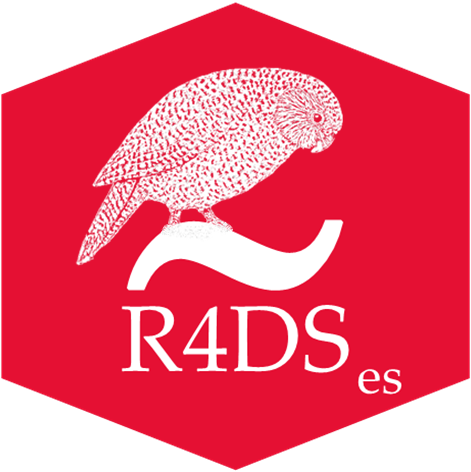

R para la Ciencia de Datos (2e)
Bienvenida
")
Este es el sitio web de la segunda edición de “R para la Ciencia de Datos”. Este libro le enseñará cómo hacer ciencia de datos con R: aprenderá cómo obtener sus datos en R, convertirlos en la estructura más útil, transformarlos y visualizarlos.
En este libro, encontrará ejercicios prácticos para aprender las habilidades necesarias para la ciencia de datos. Así como un químico aprende a limpiar tubos de ensayo y a abastecer un laboratorio, usted aprenderá a limpiar datos, dibujar diagramas y mucho más. Estas son las habilidades que hacen que exista la ciencia de datos y aquí encontrará las mejores prácticas para realizar estas tareas con R. Aprenderá a usar la gramática de los gráficos, la programación literaria y la investigación reproducible para ahorrar tiempo. También aprenderá a administrar los recursos cognitivos para facilitar los descubrimientos al discutir, visualizar y explorar datos.
Este sitio web es y será siempre gratuito, bajo la licencia de CC BY-NC-ND 3.0 License. Si desea una copia física del libro, puede pedir una en Amazon. Si aprecia leer el libro gratis y desea retribuir, haga una donación a Kākāpō Recovery: el kākāpō (que aparece en la portada de R4DS) es un loro nativo de Nueva Zelanda en peligro de extinsión; solo quedan 248.
Si habla otro idioma es posible que le interesen las traducciones disponibles gratuitamente de la primera edición:
Tenga en cuenta que R4DS utiliza un Código de conducta del colaborador. Al contribuir a este libro, usted acepta cumplir con sus términos.
Agradecimientos
R4DS está alojado por https://www.netlify.com como parte de su apoyo a las comunidades y el software de código abierto.
Sobre la traducción
 Esta traducción de “R para la Ciencia de Datos” es un proyecto personal de David Díaz Rodríguez con el objetivo de facilitar el estudio de la Ciencia de Datos con R, tanto al propio traductor como a todas aquellas personas de habla hispana que deseen aprender a realizar Ciencia de Datos con R.
Señalar que esta es una traducción textual del libro por lo que cuando los autores se refieren así mismo en primera persona, será Hadley Wickham, Mine Çetinkaya-Rundel & Garrett Grolemund y no el traductor.
La traducción fue realizada usando Google Translate y fueron corregidos algunos errores gramaticales y de coherencia. Si detecta algún error relacionado con contenido de la traducción, siéntase libre de abrir un issue o un pull request en este repositorio.